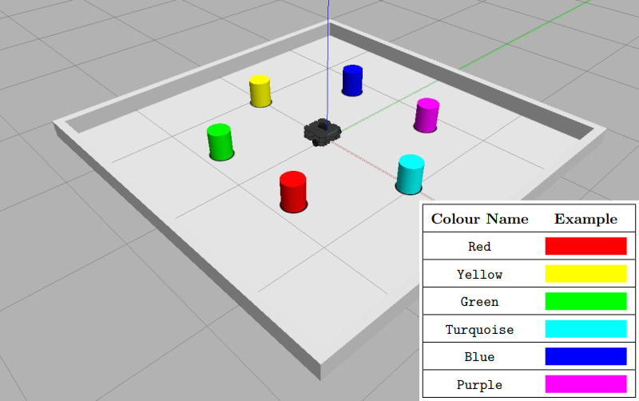
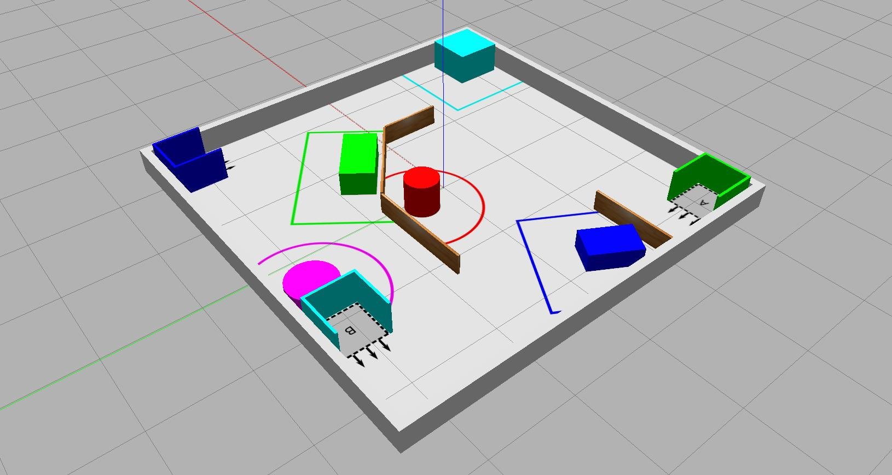

Task 4: Detection, Search & Beaconing
Develop the ROS node(s) that enable a TurtleBot3 Waffle to search an environment, detect a coloured object and beacon towards it, stopping in proximity without crashing into it!
Assessment Format: Simulation
Marks: 15/100
Summary¶
For this task your robot will be placed in a "Search Arena" containing a number of different coloured objects ("beacons"). Building on the exploration behaviour that you will have developed for Task 2, the robot will need to search the arena for a beacon of a particular "Target Colour" (each beacon in the arena will have a unique colour). The arena will contain three "Start Zones" (also uniquely coloured) and your robot will be located in one of these three zones to begin with (selected at random). The colour of the Start Zone indicates the Target Colour for the search task (the colour of the beacon that the robot needs to find). Once the target object has been detected, the robot will need to move towards it (i.e. "beaconing") and stop within a "Stop Zone" printed on the floor surrounding it. The robot must stop in the Stop Zone without touching the beacon!
The first thing that your robot will need to do in this task is detect the colour of the zone that it starts in. We learnt about colour detection in Lab Assignment #1, Week 6, where we used OpenCV to analyse the images published to the /camera/rgb/image_raw/ topic. Use what we did here, as well as the further work that we did in Week 6 Exercise 3, as a starting point for achieving the desired behaviour for this initial part of the task. Note that in the Week 6 exercises you developed algorithms to detect an object of a certain colour, but here you need to work the other way around and actually establish the colour of the object instead, so you will have to reverse the logic a bit.
You'll then need to explore the arena for the target object. Remember that both the start zone and the target object will share the same colour, so take care not to detect the start zone as the beacon! Odometry might be useful here to inform your robot of where it started from so that it knows to rule out anything in that vicinity as a potential target.
Having located the target object within the environment your robot will then need to move towards it and stop within the allocated stop zone. This technique is known as Beaconing, and we talked about some strategies for this in COM2009 Lecture 8. Perhaps you could consider an implementation of Braitenberg's Vehicle 3a as a way to control your robot's trajectory and approach to the target object?
The concept of Visual Homing (also discussed in COM2009 Lecture 8) might also be worth considering as a method to control the position and trajectory of a robot based on images from its camera. Remember that the robot's camera can also infer depth, and the LiDAR sensor provides this sort of information too. There is therefore a wealth of information available here to help with this.
Details¶
The arena used for this task will be 5.0 m x 5.0 m again and the beacons that you'll be searching for will be coloured boxes or cylinders, all between 200 mm and 400 mm in height. The Stop Zone surrounding each beacon will be 500 mm greater than the beacon's dimensions in the X and Y axis.
There are only six possible target colours that will be used in this task, so your ROS node(s) will only need to accommodate these. The colours are listed below, and there is also a simulated environment in the com2009_simulations package called beacon_colours to illustrate these too.

As for the task itself:
- Your robot will first need to determine the "Target Colour" by analysing the Start Zone that it has been placed in within the simulated arena.
- The arena will contain three Start Zones, each of a different colour, and your robot could be launched into any one of these (selected at random).
-
Once the colour of the start zone has been determined by the robot a message must be printed to the terminal to indicate which beacon colour will be targetted. This terminal message must be formatted as follows:
Where
{}is replaced by the name of the target colour as defined in the table inset in the figure above. -
The robot then needs to navigate the arena, avoiding contact with any of the objects that are located within it whilst searching for the beacon of the correct colour.
-
Once the target beacon has been detected, a message must be printed to the terminal to indicate that this has happened. The terminal message needs to be clearly visible and readable, and the robot must be facing the target beacon when it is printed. This terminal message should be formatted as follows:
-
The robot then needs to start moving towards the beacon, stopping when it is close enough to be within the stop zone surrounding it, but not close enough to actually make contact. As discussed above, the stop zone surrounding each object will be 500 mm greater than the beacon dimensions in the
X-Yplane. -
A further message must be printed to the terminal to indicate that the robot has successfully and intentionally stopped within the designated area. This terminal message should be formatted as follows:
-
The robot will have a maximum of 90 seconds to complete this task.
Timing will be determined using the "Real Time" indicator in Gazebo.
-
Your team's ROS package must contain a launch file called
task4.launch, such that the functionality that you develop for Task 4 can be launched from your package via the command:As before, your robot will already have been launched into the simulated environment before the teaching team attempt to execute your launch file.
Simulation Resources¶
Within the com2009_simulations package there is an environment called beaconing, which can be used to develop and test out your ROS node(s) for this task.
The arena contains three start zones: A, B & C; each of a different colour, as well as a number of uniquely coloured beacons. There is one beacon in the arena to match each of the three start zones, plus a couple more to act as red herrings!

You can launch the robot in any of the three start zones by using roslaunch as follows:
...where {} can be replaced with either a, b or c to select the start zone that you want the robot to be located in when the simulation launches. You can therefore develop and test out your beaconing algorithms in three unique scenarios.
Note
- The same arena will be used to assess your submission for this task.
- The colour of the start zones and beacons will change, but the shape, size and location of all the objects will stay the same.
- Once again, the start zone that your robot is launched in for the assessment will be selected at random.
Marking¶
There are 15 marks available for this task in total, awarded according to the criteria below. No partial credit will be awarded unless specifically stated against any of the criteria.
| Criteria | Marks | Details |
|---|---|---|
| A: Identifying the target colour | 2/15 | Whilst the robot is still located within the start zone a ROS node within your package must print a message to the terminal to indicate the target colour that has been determined and that will subsequently be used to identify the target beacon. You will receive the full marks available here provided the terminal message is presented and formatted as specified here. |
| B: Detecting the correct beacon | 3/15 | You will receive the full marks available here for ensuring a message is printed to the terminal to indicate that the target beacon has been identified within the environment. The terminal message must be formatted as specified here, and the robot must be looking directly at the beacon when this message is printed. |
| C: Stopping in the correct stop zone | 5/15 | Your robot must stop inside the correct stop zone within the 90-second time limit and a message must be printed to the terminal to indicate that this has been done intentionally. You will receive the full marks available here provided this is achieved successfully, and the terminal message is formatted as specified here. If your robot manages to stop, but part of its body lies outside the stop zone then you will be awarded half-marks. |
| D: An "incident-free-run" | 5/15 | If your robot completes the task (or the 90 seconds elapses) without it making contact with anything in the arena then you will be awarded the maximum marks here. Marks will be deducted for any contact made, to a minimum of 0 (i.e. no negative marking). Your robot must be moving within the arena continually to be eligible for these marks though, simply turning on the spot for 90 seconds is not enough! |